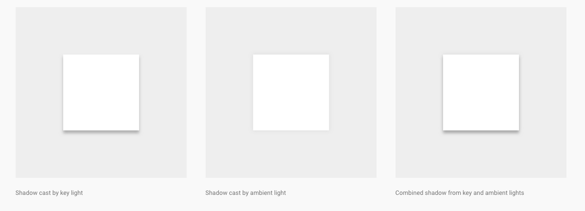
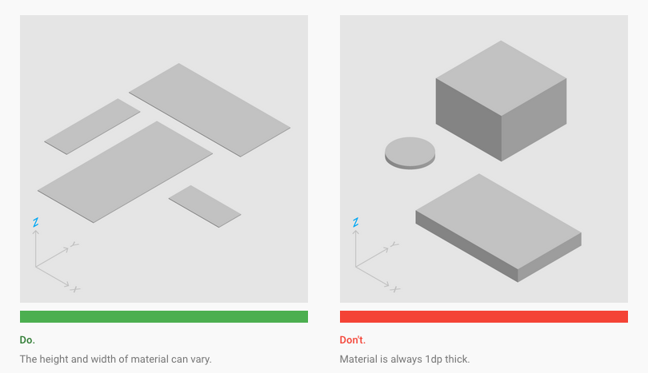

Material Design
Creado por: Carlos Rojas [carlos@bootcampwith.us] / @carlosrojas_o
Objetivos
- Aprender los principios de Material Design
¿ Que es ?

¿ Que es ?
Un lenguaje visual que sintetiza los principios clasicos de buén diseño con la posibilidad de tecnologia y ciencia.
Principios.
Material es una metafora.

Arriesgado, Grafico, Intencional.

Movimiento provee significado.

Entorno.
Tres Dimensiones

Luz y Sombras
Propiedades.
Propiedades Fisicas
Correcto.
Las sombras deben representar la elevación relativa entre los elementos.
Incorrecto.
Las sombras deben representar la elevación relativa entre los elementos.